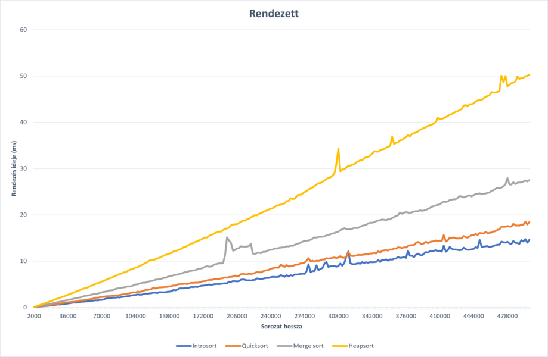
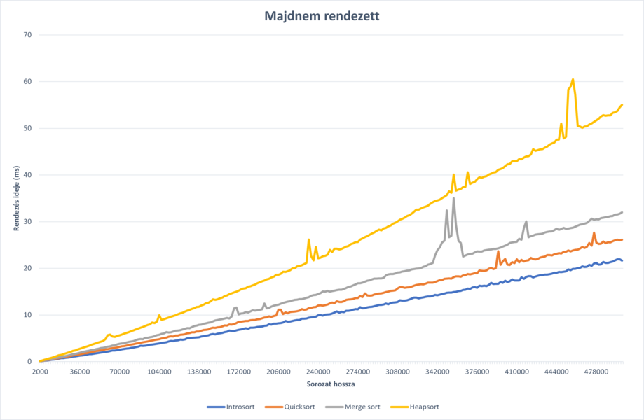
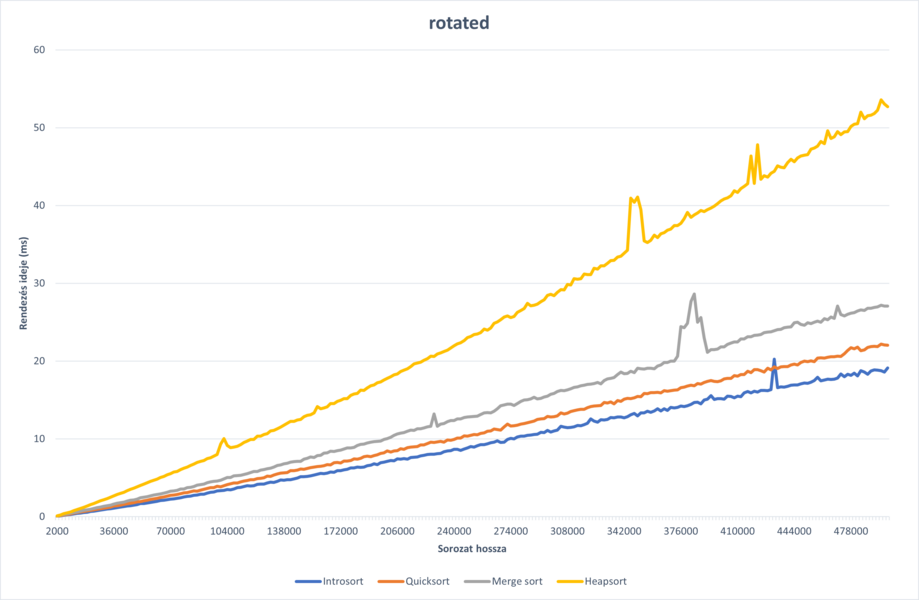
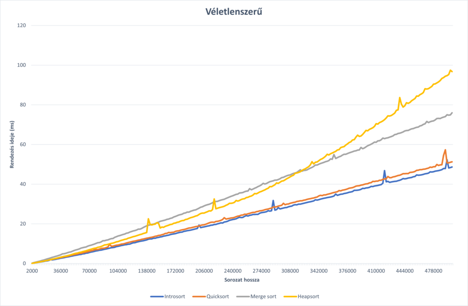

Előszó
A gyakorlatban egy nagyon gyors hibrid rendezési algoritmus. Ez a
hibrid rendezés a a gyorsrendezés(quicksort), kupacrendezés(heapsort) és a
beilleszéses
rendezés(insertion
sort) algoritumusokból áll. Többek között a c++ standard
könyvtárakban ezt az algoritmust valósítják meg.
Ez a rendezés nem stabil, azaz az azonos elemek
sorrendje
változhat a rendezés alatt.
Ezt az std::sort néven lehet
elérni.
Az egyik leggyorsabb stabil rendezési
algoritmus a TimSort, amely a mergesort és insertion sort
algoritmusok kompozíciójával állítható elő, amelyek önállóan is stabil rendezések.
A c++ standard implementációkban tipikusan ez az algoritmus található meg a std::stable_sort
néven.
Algoritmus
A rendezés alapja a gyorsrendezés, de annak legrosszabb esetének elkerülése érdekében ha a gyors
rendezés
túl mélyre megy, akkor a rendezés kupacrendezésre vált. A
maximális mélységet tipikusan a bemenet hosszának logaritmusának függvényében határozzák meg.
A rövid sorozatokat viszont általában nem éri meg
rekurzív rendezésekkel rendezni, ezért egy bizonyos metaparaméternél
rövidebb
részeket beillesztéses rendezéssel rendezzük.
A röveidebb részeken komplex rendezési algoritmusok tipikusan lassabbak, ennek okai főként a
következők:
-
A Branch Predictor nem
képes
minden esetben helyesen megjósolni a végrehajtási utat, ha az algoritmus bonyolult, ezek a
rosszul megjósolt végrahajtási utakhoz érve a számítógépnek újra kell kezdenie az információ
lekérését, így nem képes kihasználni a processzor párhuzamosságát(megj: Egy processzor mag
is képes több dolgot csinálni egyszerre, páldául adatokat betölteni és számíttásokat
végezni.) egyszerűbb
algoritmusok esetén a branch predictor-nak sokkal könnyebb dolga van.
-
Döntő tényező lehet
cachemiss-ek száma, ami akkor lép fel ha
olyan memóriaterületet próbálunk elérni amely nincs a
gyorsíttótárban,
ekkor a processzornak nagyságrendekkel többet kell várnia az adat betöltésére mintha a
gyorsítótárból
olvasta volna be. Az egyszerűbb algoritmusok tipikusan egymás melletti mermória területeket
próbálnak elérni, így sokkal kissebb az esélye hogy a kért adat nincs bent a gyorsítótárban
Az összeépített algoritmusban egy gyorsabb beillesztéses rendezést és tipikusan a Median of 3 (
link a
quicsort oldalra median of 3 címhez) pivot választással implementált gyorsrendezést használják.
Function sort(Arr: array):None
introsort(arr, 0, length(array)-1, 2*floor(log2(length(array))))
Function introsort(arr: array, lo: integer, hi: integer, maxdepth: integer):None
if hi - lo + 1 < TRASHOLD:
InsertionSort(arr, lo, hi)
return
if maxdepth = 0:
heapsort(arr, lo, hi)
return
pivot:Integer = ChoosePivot(arr, lo, hi)
partitionPoint:Integer = partition(arr, lo, hi, pivot)
introsort(arr, lo, partitionPoint - 1, maxdepth - 1)
introsort(arr, partitionPoint + 1, hi, maxdepth - 1)
return
Itt TRASHOLD egy metaparaméter optimális választás körülbellül 16,
viszont ez nagy mértékben függ a rendezett típustól, ha a típus mozgatása lassú akkor a TRASHOLD értéke kisebb. Ezt az optimalizációt a GCC fordító nem, de a clang
fordító alkalmazza.
\(2 \left \lfloor \log_2 \left | \text{array} \right | \right \rfloor \) A következő kifejezés
is átállítható a maximális hatékonyság érdekében, de a sorozat hosszának logaritmusával arányos
választás javasolt.
Hatékonyság
Az algoritmus várható futási ideje n log n. Ez quicksort
várható futási ideje is.
Az insertion sort minden kisebb részen csak egyszer fut le, így lineáris időt vesz igénybe a
beillesztéses rendezés, így a teljes algoritmus n log n várható futási idejű.
Legrosszabb eset amikor a gyorsrendezés négyzetes futási idejű, ilyenkor viszont a maximális
mélység elérése után az algoritmus kupacrendezésre vált, amely k log k idő alatt
rendezi a k hosszú résztömböt, így
maximális mélység * k + k log k = k*(maximális mélység + log k)
\(\approx\) k log k időt vesz igénybe maximális mélység + k elem rendezése . Így a
legrosszabb esetben is n log2 n időben rendezhető a teljes tömb.
Azért nem használunk heapsortot minden esetben, mert a kupac
struktúra fenttartához rendezés alatt
sok cserére van szükség. Így a gyakorlatban a gyors rendezés véletlenszerű adatok
esetén
gyorsabb a kupacrendezésnél.
Összehasonlítás
Komplexitások
Összefoglaló
Az intro, merge és heapsort algoritmusok futási ideje optimális, a quicksort tér el ettől a legrosszabb esetében, ahol
jelentőssen lassabb
| Rendezés |
Legjobb |
Várható |
Legrosszab |
| Intro |
n log n |
n log n |
n log n |
| Quick med3 |
n log n |
n log n |
n2 |
| Merge |
n log n |
n log n |
n log n |
| Heapsort |
n log n |
n log n |
n log n |
Az összehasonlíttásban 3 másik híres logaritmikus faktorral rendelkező rendezéssel
hasonlítjuk
össze.
Az összefésüléses rendezés egy stabil rendezés n log2 n futási idővel, de az
összefésüléshez
tipikusan
lineáris addicionális tárhelyre van szüksége.
A gyors rendezésnek egy változata a Median of Three pivot
választási stratégiát használja(link a
quick
sort Median of Three re). Egy másik híres variánsa a Median of
Medians algoritmust használja,
ennek a
változatnak az érdekessége, hogy legrosszabb esetben is n log n futási
idejű,
viszont az
algoritmust tipikusan nem éri meg használni, a nagyon magas konstans faktora miatt.
A mérések menete a következő, -1 millió és 1 millió közötti random egész számokból a
leírt
mintának
megfelelően generált sorozatokat. 2000 től 2 ezresével 500 ezerig minden mérettel, és
minden
méretnél
100 darab rendezés átlag futási ideje kerül rögzíttésre.
Megjegyezném, hogy a quicksortot és az insertion sort algoritmusait optimalizáltam, a
merge sort
és
heapsort rendezéset egy az egyben egy referencia alapján implementáltam.
Rendezett
Ebben az összehasonlításban sorozatok már eredetileg is rendezve vannak.

Véletlenszerű adatok esetén a quicksort és introsort dominál, az intro sort kis előnye a
rövid (< 16) intervallumokat insertionsortal rendezi, a heap sort és merge sort lényegesen
lassabbak. Ez a gyorsaság azért lehet mert a gyorsabb rendezés nem mozgatja feleslegesen
az elemeket. A legrosszabb rendezés a heapsort, mert a heap strucktúrát fent kell
tartania a rendezés során.
Majdnem rendezett
Itt az elemek maximum 4% a nincs a tényleges helyén.

Itt hasonló eredményeket láthatunk, mint a rendezett változatban.
Forgatott
Itt az adatok rendezés után el lettek forgatva rendezés után. Ez azt jelenti, hogy az adatok
között a
következő reláció áll fent(jobbra forgatás esetén):
a1 < a < … < ak < ak+1 <
ak+2
< … < an és a1 > ak+1

Véletlenszerű
Értelem szerűen itt az adatok véletlenszerű sorrendben vannak

Véletlenszerű adatok esetén látszólag a quicksort és az introsort hasonlóan gyors, viszont a
quick
sort kaphat olyan sorozatot amire nagyságrendekkel lassabb lesz mint az átlagos futási
ideje, ilyen
az introsortnál nem fordulhat elő.
Megfigyelhetjuk még hogy a heapsort megelőzi egy darabig a mergesort-ot, de nagyobb adatok
esetén a
heap fenntartása túl nagy számítási kapacitást foglal el, de ne feledjük hogy a merge
sortnak a
sorozat mellett még egy a sorozat méretével megegyező tárhelyre is szüksége van.
Konklúzió
Az összehasonlíttás sajnos nem elég általános, hiszen „kisebb” számokat rendezünk, melyek
másolása és
mozgatása triviális, így a mozgatások számából következő eltéréseket nem reflektálja
megfelelően az
előző összehasonlíttás. Később esetleg nagyon típusokat, nem triviális másolással is
összehasonlíthatunk, például Szövegek rendezése, vagy akár számolhatjuk a cserék és
mozgatások
számát is.
A rendezések összehasonlítása a várt eredményt mutatja, hogy a hibrid rendezés jobb, mint a
többi
egyszerűbb rendezés. Feltehetően ez az egyik legjobb összehasonlításos rendezés. Melynek
nincs
különösebb rossz esete.
További optimalizációs lehetőségek például a párhuzamosíttás, a quicksort, és ezért az
introsort is
viszonylag egyszerűen párhuzamosítható. Ennél egy kicsit nehezebben, de az összefésüléses
rendezés
is párhuzamosítható.
A legjobb rendezési algoritmus azonban nem egyértelmű, attól függ, hogy mit és hogy hol
rendezünk.
Egész számokra valószínűleg a leggyorsabb rendezés a radixsort(link), vagy ha kis
intervallumon lévő
egészekről beszélünk akkor még gyorsabb a counting sort(link)
Implementáció C++
#include <cmath>
#include "insertionsort.hpp"
#include "heapsort.hpp"
#include "util.hpp"
int medianOfThree(int arr[], int lo, int hi){
int mid = (lo + hi) / 2;
if(arr[lo] > arr[mid]) swap(arr[lo], arr[mid]);
if(arr[lo] > arr[hi]) swap(arr[lo], arr[hi]);
if(arr[hi] < arr[mid]) swap(arr[hi], arr[mid]);
return mid;
}
void introsort(int arr[], int lo, int hi, int maxdepth){
if (hi - lo < 16){
insertionsort(arr, lo, hi);
return;
}
if(maxdepth == 0){
heapsort(arr, lo, hi);
return;
}
int pivot = medianOfThree(arr, lo, hi);
swap(arr[pivot], arr[hi-1]);
int partitionPoint = partition(arr, lo + 1, hi - 1);
introsort(arr, lo, partitionPoint - 1, maxdepth - 1);
introsort(arr, partitionPoint + 1, hi, maxdepth - 1);
}
void sort(int arr[], int size){
int maxdepth = std::ceil(std::log2f(size)) * 8;
introsort(arr, 0, size -1, maxdepth);
}